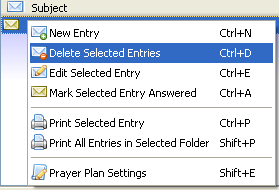

The following are the ways to delete the selected entries:
- Clicking this
 toolbar button.
toolbar button.
- Choosing this action from the Entry menu.

- Choosing this action from the Entry context menu (right-click menu).
 - Pressing Control+D on the keyboard.
Below is a screenshot of the confirmation prompt:

Once you have clicked OK, the entry will be moved the the Deleted Folder. Once you have emptied the deleted folder, the entries will not be recoverable.